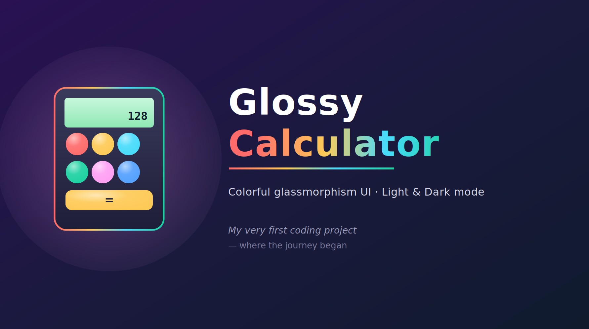
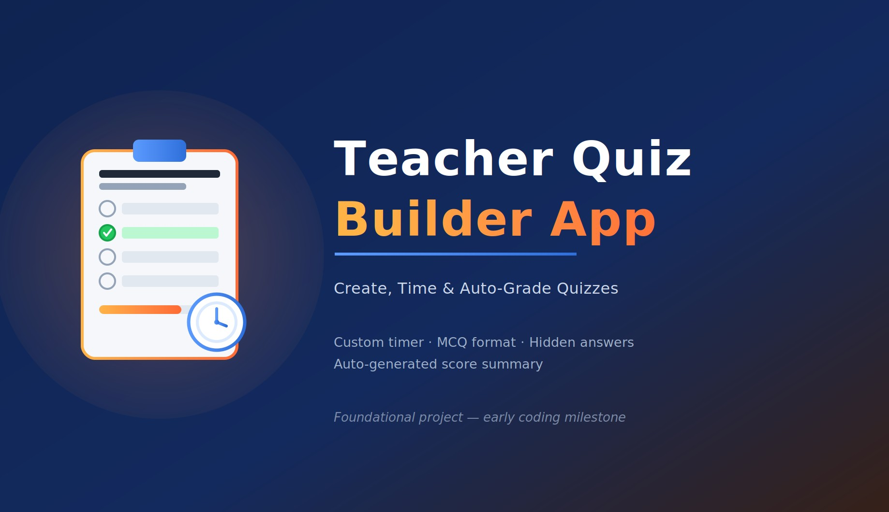
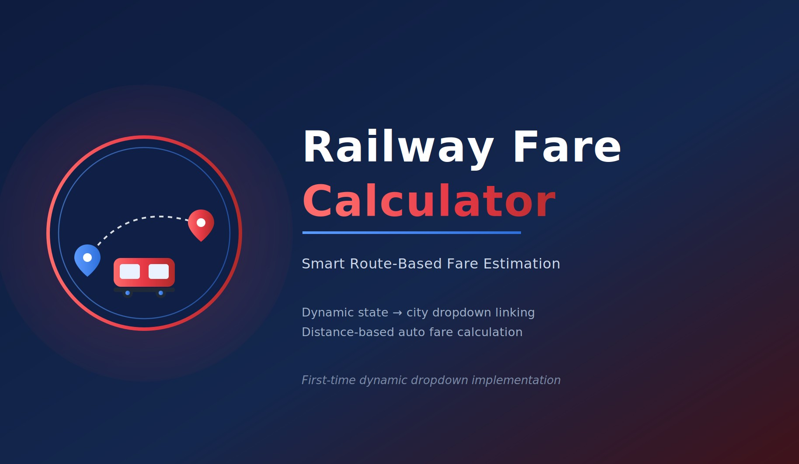
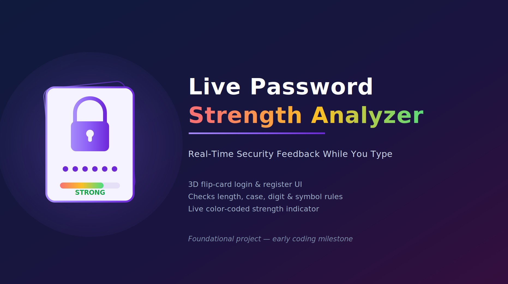
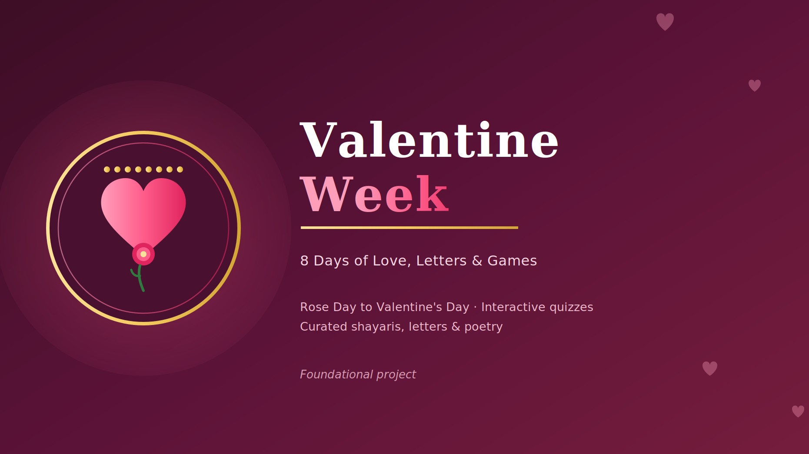
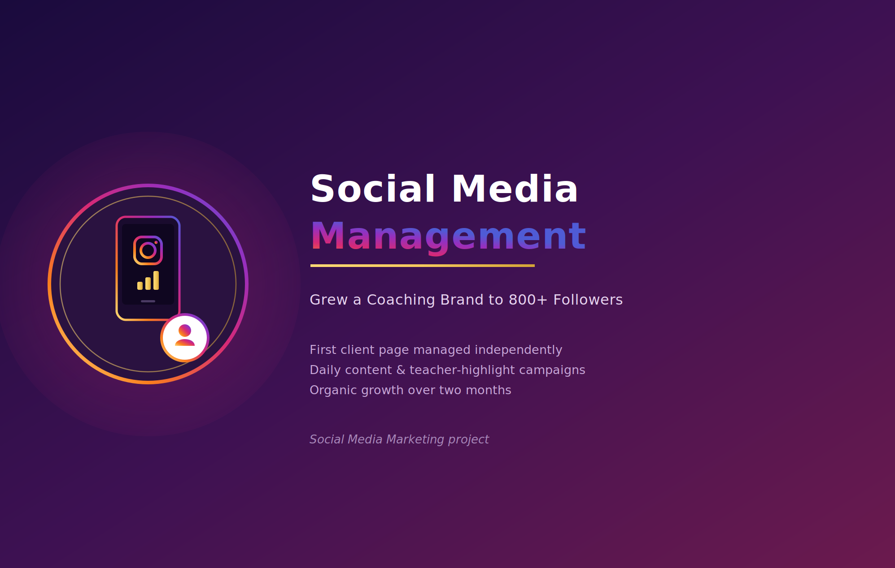

These foundational projects were developed in the early stages of learning. Their prototypes are no longer available here, but can be viewed on Instagram: @shums.edit

Glossy Calculator
First-ever coding project, foundational milestone
Glassy, colorful glossy-style UI design
Basic arithmetic operations, fully functional
Light and dark mode toggle
Marks the start of coding journey

Teacher Quiz Builder
Teacher-controlled question and answer creation
Custom timer with auto-submit feature
Multiple-choice format, four options each
Answers hidden until final submission
Auto-generated score and result summary

Railway Fare Calculation
Dynamic state-to-city dropdown linking
Auto-calculated fare based on distance
Source and destination journey selection
Real-time city list updates per state
First-time dynamic dropdown logic implementation

Live Password Strength Analyzer
3D flip-card login and register UI
Real-time password strength validation logic
Live color-coded strength indicator bar
Checks length, case, digit, symbol rules
Smooth animated flip page transition

Valentine Week
Eight themed pages, Rose Day to Valentine's
Interactive quiz games for each day
Curated love letters and shayaris included
Daily poetry matching each theme
Fully responsive romantic UI design
Smooth day-to-day navigation flow
Complete standalone mini web project
Client Work

Social Media Management — Coaching Consultancy
First social media page managed for a client
Daily content creation for coaching consultancy brand
Posts highlighting qualified teachers and course offerings
Consistent posting strategy built organic engagement